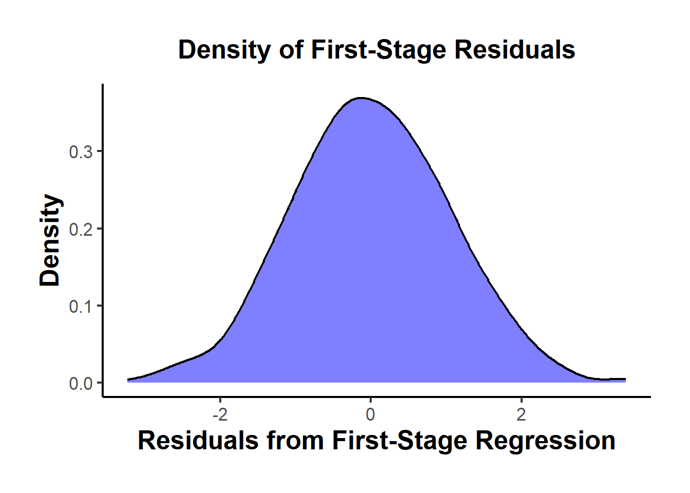

34.6 Testing Assumptions
We are interested in estimating the causal effect of an endogenous regressor \(X_2\) on an outcome variable \(Y\), using instrumental variables \(Z\) to address endogeneity.
The structural model of interest is:
\[ Y = \beta_1 X_1 + \beta_2 X_2 + \epsilon \]
- \(X_1\): Exogenous regressors
- \(X_2\): Endogenous regressor(s)
- \(Z\): Instrumental variables
If \(Z\) satisfies the relevance and exogeneity assumptions, we can identify \(\beta_2\) as:
\[ \beta_2 = \frac{Cov(Z, Y)}{Cov(Z, X_2)} \]
Alternatively, in terms of reduced form and first stage estimates:
- Reduced Form (effect of \(Z\) on \(Y\)):
\[ \rho = \frac{Cov(Y, Z)}{Var(Z)} \]
- First Stage (effect of \(Z\) on \(X_2\)):
\[ \pi = \frac{Cov(X_2, Z)}{Var(Z)} \]
- IV Estimate:
\[ \beta_2 = \frac{Cov(Y,Z)}{Cov(X_2, Z)} = \frac{\rho}{\pi} \]
To interpret \(\beta_2\) as the causal effect of \(X_2\) on \(Y\), the following assumptions must hold:
34.6.1 Relevance Assumption
In IV estimation, instrument relevance ensures that the instrument(s) \(Z\) can explain sufficient variation in the endogenous regressor(s) \(X_2\) to identify the structural equation:
\[ Y = \beta_1 X_1 + \beta_2 X_2 + \epsilon \]
The relevance condition requires that the instrument(s) \(Z\) be correlated with the endogenous variable(s) \(X_2\), conditional on other covariates \(X_1\). Formally:
\[ Cov(Z, X_2) \ne 0 \]
Or, in matrix notation for multiple instruments and regressors, the matrix of correlations (or more generally, the projection matrix) between \(Z\) and \(X_2\) must be of full column rank. This guarantees that \(Z\) has non-trivial explanatory power for \(X_2\).
An equivalent condition in terms of population moment conditions is that:
\[ E[Z' (X_2 - E[X_2 | Z])] \ne 0 \]
This condition ensures the identification of \(\beta_2\). Without it, the IV estimator would be undefined due to division by zero in its ratio form:
\[ \hat{\beta}_2^{IV} = \frac{Cov(Z, Y)}{Cov(Z, X_2)} \]
The first-stage regression operationalizes the relevance assumption:
\[ X_2 = Z \pi + X_1 \gamma + u \]
- \(\pi\): Vector of first-stage coefficients, measuring the effect of instruments on the endogenous regressor(s).
- \(u\): First-stage residual.
Identification of \(\beta_2\) requires that \(\pi \ne 0\). If \(\pi = 0\), the instrument has no explanatory power for \(X_2\), and the IV procedure collapses.
34.6.1.1 Weak Instruments
Even when \(Cov(Z, X_2) \ne 0\), weak instruments pose a serious problem in finite samples:
- Bias: The IV estimator becomes biased in the direction of the OLS estimator.
- Size distortion: Hypothesis tests can have inflated Type I error rates.
- Variance: Estimates become highly variable and unreliable.
Asymptotic vs. Finite Sample Problems
- IV estimators are consistent as \(n \to \infty\) if the relevance condition holds.
- With weak instruments, convergence can be so slow that finite-sample behavior is practically indistinguishable from inconsistency.
Boundaries between relevance and strength are thus critical in applied work.
34.6.1.2 First-Stage F-Statistic
In a single endogenous regressor case, the first-stage F-statistic is the standard test for instrument strength.
First-Stage Regression:
\[ X_2 = Z \pi + X_1 \gamma + u \]
We test:
\[ \begin{aligned} H_0&: \pi = 0 \quad \text{(Instruments have no explanatory power)} \\ H_1&: \pi \ne 0 \quad \text{(Instruments explain variation in $X_2$)} \end{aligned} \]
F-Statistic Formula:
\[ F = \frac{(SSR_r - SSR_{ur}) / q}{SSR_{ur} / (n - k - 1)} \]
- \(SSR_r\): Sum of squared residuals from the restricted model (no instruments).
- \(SSR_{ur}\): Sum of squared residuals from the unrestricted model (with instruments).
- \(q\): Number of excluded instruments (restrictions tested).
- \(n\): Number of observations.
- \(k\): Number of control variables.
Interpretation:
- A rule of thumb (Staiger and Stock 1997): If \(F < 10\), instruments are weak.
- However, Lee et al. (2022) criticizes this threshold, advocating for model-specific diagnostics.
- M. J. Moreira (2003) proposes the Conditional Likelihood Ratio test for inference under weak instruments (D. W. Andrews, Moreira, and Stock 2008).
Use linearHypothesis() in R to test instrument relevance.
34.6.1.3 Cragg-Donald Test
The Cragg-Donald statistic is essentially the same as the Wald statistic of the joint significance of the instruments in the first stage (Cragg and Donald 1993), and it’s used specifically when you have multiple endogenous regressors. It’s calculated as:
\[ CD = n \times (R_{ur}^2 - R_r^2) \]
where:
\(R_{ur}^2\) and \(R_r^2\) are the R-squared values from the unrestricted and restricted models respectively.
\(n\) is the number of observations.
For one endogenous variable, the Cragg-Donald test results should align closely with those from Stock and Yogo. The Anderson canonical correlation test, a likelihood ratio test, also works under similar conditions, contrasting with Cragg-Donald’s Wald statistic approach. Both are valid with one endogenous variable and at least one instrument.
library(cragg)
library(AER) # for dataaset
data("WeakInstrument")
cragg_donald(
# control variables
X = ~ 1,
# endogeneous variables
D = ~ x,
# instrument variables
Z = ~ z,
data = WeakInstrument
)
#> Cragg-Donald test for weak instruments:
#>
#> Data: WeakInstrument
#> Controls: ~1
#> Treatments: ~x
#> Instruments: ~z
#>
#> Cragg-Donald Statistic: 4.566136
#> Df: 198Large CD statistic implies that the instruments are strong, but not in our case here. But to judge it against some critical value, we have to look at Stock-Yogo
34.6.1.4 Stock-Yogo
The Stock-Yogo test does not directly compute a statistic like the F-test or Cragg-Donald, but rather uses pre-computed critical values to assess the strength of instruments. It often uses the eigenvalues derived from the concentration matrix:
\[ S = \frac{1}{n} (Z' X) (X'Z) \]
where \(Z\) is the matrix of instruments and \(X\) is the matrix of endogenous regressors.
Stock and Yogo provide critical values for different scenarios (bias, size distortion) for a given number of instruments and endogenous regressors, based on the smallest eigenvalue of \(S\). The test compares these eigenvalues against critical values that correspond to thresholds of permissible bias or size distortion in a 2SLS estimator.
- Critical Values and Test Conditions: The critical values derived by Stock and Yogo depend on the level of acceptable bias, the number of endogenous regressors, and the number of instruments. For example, with a 5% maximum acceptable bias, one endogenous variable, and three instruments, the critical value for a sufficient first stage F-statistic is 13.91. Note that this framework requires at least two overidentifying degree of freedom. Stock and Yogo (2002) set the critical values such that the bias is less then 10% (default)
\(H_0:\) Instruments are weak
\(H_1:\) Instruments are not weak
library(cragg)
library(AER) # for dataaset
data("WeakInstrument")
stock_yogo_test(
# control variables
X = ~ Sepal.Length,
# endogeneous variables
D = ~ Sepal.Width,
# instrument variables
Z = ~ Petal.Length + Petal.Width + Species,
size_bias = "bias",
data = iris
)
#> Results of Stock and Yogo test for weak instruments:
#>
#> Null Hypothesis: Instruments are weak
#> Alternative Hypothesis: Instruments are not weak
#>
#> Data: iris
#> Controls: ~Sepal.Length
#> Treatments: ~Sepal.Width
#> Instruments: ~Petal.Length + Petal.Width + Species
#>
#> Alpha: 0.05
#> Acceptable level of bias: 5% relative to OLS.
#> Critical Value: 16.85
#>
#> Cragg-Donald Statistic: 61.30973
#> Df: 14434.6.1.5 Anderson-Rubin Test
The Anderson-Rubin (AR) test addresses the issues of weak instruments by providing a test for the structural parameter (\(\beta\)) that is robust to weak instruments (T. W. Anderson and Rubin 1949). It does not rely on the strength of the instruments to control size, making it a valuable tool for inference when instrument relevance is questionable.
Consider the following linear IV model:
\[ Y = X \beta + u \]
- \(Y\): Dependent variable (\(n \times 1\))
- \(X\): Endogenous regressor (\(n \times k\))
- \(Z\): Instrument matrix (\(n \times m\)), assumed to satisfy:
- Instrument Exogeneity: \(\mathbb{E}[Z'u] = 0\)
- Instrument Relevance: \(\mathrm{rank}(\mathbb{E}[Z'X]) = k\)
The relevance assumption ensures that \(Z\) contains valid information for predicting \(X\).
Relevance is typically assessed in the first-stage regression:
\[ X = Z \Pi + V \]
If \(Z\) is weakly correlated with \(X\), \(\Pi\) is close to zero, violating the relevance assumption.
The AR test is a Wald-type test for the null hypothesis:
\[ H_0: \beta = \beta_0 \]
It is constructed by examining whether the residuals from imposing \(\beta_0\) are orthogonal to the instruments \(Z\). Specifically:
- Compute the reduced-form residuals under \(H_0\):
\[ r(\beta_0) = Y - X \beta_0 \]
- The AR test statistic is:
\[ AR(\beta_0) = \frac{r(\beta_0)' P_Z r(\beta_0)}{\hat{\sigma}^2} \]
- \(P_Z = Z (Z'Z)^{-1} Z'\) is the projection matrix onto the column space of \(Z\).
- \(\hat{\sigma}^2 = \frac{r(\beta_0)' M_Z r(\beta_0)}{n - m}\) is the residual variance estimator, with \(M_Z = I - P_Z\).
Under \(H_0\), and assuming homoskedasticity, the AR statistic follows an F-distribution:
\[ AR(\beta_0) \sim F(m, n - m) \]
Alternatively, for large \(n\), the AR statistic can be approximated by a chi-squared distribution:
\[ AR(\beta_0) \sim \chi^2_m \]
Interpretation
- If \(AR(\beta_0)\) exceeds the critical value from the \(F\) (or \(\chi^2\)) distribution, we reject \(H_0\).
- The test assesses whether \(r(\beta_0)\) is orthogonal to \(Z\). If not, \(H_0\) is inconsistent with the moment conditions.
The key advantage of the AR test is that its size is correct even when instruments are weak. The AR statistic does not depend on the strength of the instruments (i.e., the magnitude of \(\Pi\)), making it valid under weak identification.
This contrasts with standard 2SLS-based Wald tests, whose distribution depends on the first-stage relevance and can be severely distorted if \(Z\) is weakly correlated with \(X\).
- The relevance assumption is necessary for point identification and consistent estimation in IV.
- If instruments are weak, point estimates of \(\beta\) from 2SLS can be biased.
- The AR test allows for valid hypothesis testing, even if instrument relevance is weak.
However, if instruments are completely irrelevant (i.e., \(Z'X = 0\)), the IV model is unidentified, and the AR test lacks power (i.e., it does not reject \(H_0\) for any \(\beta_0\)).
The AR test can be inverted to form confidence sets for \(\beta\):
- Compute \(AR(\beta)\) for a grid of \(\beta\) values.
- Include all \(\beta\) values for which \(AR(\beta)\) does not reject \(H_0\) at the chosen significance level.
These confidence sets are robust to weak instruments and can be disconnected or unbounded if identification is weak.
set.seed(123)
# Simulate data
n <- 500
Z <- cbind(1, rnorm(n)) # Instrument (include constant)
X <- 0.1 * Z[,2] + rnorm(n) # Weak first-stage relationship
beta_true <- 1
u <- rnorm(n)
Y <- X * beta_true + u
library(ivmodel)
ivmodel(Y = Y, D = X, Z = Z)
#>
#> Call:
#> ivmodel(Y = Y, D = X, Z = Z)
#> sample size: 500
#> _ _ _ _ _ _ _ _ _ _ _ _ _ _ _ _ _ _ _ _ _ _ _ _ _ _ _ _ _ _
#>
#> First Stage Regression Result:
#>
#> F=0.684842, df1=2, df2=497, p-value is 0.50464
#> R-squared=0.002748329, Adjusted R-squared=-0.001264756
#> Residual standard error: 1.01117 on 499 degrees of freedom
#> _ _ _ _ _ _ _ _ _ _ _ _ _ _ _ _ _ _ _ _ _ _ _ _ _ _ _ _ _ _
#>
#> Sargan Test Result:
#>
#> Sargan Test Statistics=0.007046677, df=1, p-value is 0.9331
#> _ _ _ _ _ _ _ _ _ _ _ _ _ _ _ _ _ _ _ _ _ _ _ _ _ _ _ _ _ _
#>
#> Coefficients of k-Class Estimators:
#>
#> k Estimate Std. Error t value Pr(>|t|)
#> OLS 0.00000 1.05559 0.04396 24.015 <2e-16 ***
#> Fuller 0.99800 1.81913 0.80900 2.249 0.0250 *
#> TSLS 1.00000 2.37533 1.40555 1.690 0.0917 .
#> LIML 1.00001 2.38211 1.41382 1.685 0.0926 .
#> ---
#> Signif. codes: 0 '***' 0.001 '**' 0.01 '*' 0.05 '.' 0.1 ' ' 1
#> _ _ _ _ _ _ _ _ _ _ _ _ _ _ _ _ _ _ _ _ _ _ _ _ _ _ _ _ _ _
#>
#> Alternative tests for the treatment effect under H_0: beta=0.
#>
#> Anderson-Rubin test (under F distribution):
#> F=1.874305, df1=2, df2=497, p-value is 0.15454
#> 95 percent confidence interval:
#> Whole Real Line
#>
#> Conditional Likelihood Ratio test (under Normal approximation):
#> Test Stat=3.741629, p-value is 0.14881
#> 95 percent confidence interval:
#> Whole Real Line34.6.1.6 Stock-Wright Test
While the Anderson-Rubin test offers one solution by constructing test statistics that are valid regardless of instrument strength, another complementary approach is the Stock-Wright test, sometimes referred to as the S-test or Score test. This test belongs to a broader class of conditional likelihood ratio tests proposed by M. J. Moreira (2003) and Stock and Wright (2000), and it plays an important role in constructing weak-instrument robust confidence regions.
The Stock-Wright test exploits the conditional score function of the IV model to test hypotheses about structural parameters, offering robustness under weak identification.
Consider the linear IV model:
\[ Y = X \beta + u \]
- \(Y\): Outcome variable (\(n \times 1\))
- \(X\): Endogenous regressor (\(n \times k\))
- \(Z\): Instrument matrix (\(n \times m\)), where \(m \ge k\)
The exogeneity and relevance assumptions for \(Z\) are:
- \(\mathbb{E}[Z'u] = 0\) (Exogeneity)
- \(\mathrm{rank}(\mathbb{E}[Z'X]) = k\) (Relevance)
Weak instruments imply that the matrix \(\mathbb{E}[Z'X]\) is close to rank-deficient or nearly zero, which can invalidate standard inference.
The goal is to test the null hypothesis:
\[ H_0: \beta = \beta_0 \]
The Stock-Wright test provides a robust way to perform this hypothesis test by constructing a score statistic that is robust to weak instruments.
The score test (or Lagrange Multiplier test) evaluates whether the score (the gradient of the log-likelihood function with respect to \(\beta\)) is close to zero under the null hypothesis.
In the IV context, the conditional score is evaluated from the reduced-form equations. The SW test uses the fact that under \(H_0\), the moment condition:
\[ \mathbb{E}[Z'(Y - X \beta_0)] = 0 \]
should hold. Deviations from this condition can be tested using a score statistic.
The reduced-form equations are:
\[ \begin{aligned} Y &= Z \pi_Y + \epsilon_Y \\ X &= Z \pi_X + \epsilon_X \end{aligned} \]
Under this system:
\(\epsilon_Y\) and \(\epsilon_X\) are jointly normally distributed with covariance matrix \(\Sigma\).
The structural model implies a restriction on \(\pi_Y\): \(\pi_Y = \pi_X \beta\).
The Stock-Wright test statistic is given by:
\[ S(\beta_0) = (Z'(Y - X \beta_0))' \left[ \hat{\Omega}^{-1} \right] (Z'(Y - X \beta_0)) \]
Where:
\(\hat{\Omega}\) is an estimator of the covariance matrix of the moment condition \(Z'u\), often estimated by \(Z'Z\) times an estimator of \(\mathrm{Var}(u)\).
In homoskedastic settings, \(\hat{\Omega} = \hat{\sigma}^2 Z'Z\), with \(\hat{\sigma}^2\) estimated from the residuals under \(H_0\):
\[ \hat{\sigma}^2 = \frac{(Y - X \beta_0)' (Y - X \beta_0)}{n} \]
Under the null hypothesis \(H_0\), the test statistic \(S(\beta_0)\) follows a chi-squared distribution with \(m\) degrees of freedom:
\[ S(\beta_0) \sim \chi^2_m \]
The Stock-Wright test is closely related to the Anderson-Rubin test. However:
- The AR test focuses on the orthogonality of the reduced-form residuals with \(Z\).
- The SW test focuses on the conditional score, derived from the likelihood framework.
- Both are robust to weak instruments, but they have different power properties depending on the data-generating process.
Geometric Intuition
- The SW test can be seen as testing whether the orthogonality condition between \(Z\) and \(u\) holds, using a score function.
- It effectively checks whether the directional derivative of the likelihood (evaluated at \(\beta_0\)) is zero, offering a generalized method of moments interpretation.
The Stock-Wright S-test can be inverted to form confidence regions:
- For a grid of \(\beta\) values, compute \(S(\beta)\).
- The confidence region consists of all \(\beta\) values where \(S(\beta)\) does not reject \(H_0\) at the chosen significance level.
These regions are robust to weak instruments, and can be disconnected or unbounded if the instruments are too weak to deliver informative inference.
set.seed(42)
# Simulate data
n <- 500
Z <- cbind(1, rnorm(n)) # Instrument (include constant)
X <- 0.1 * Z[,2] + rnorm(n) # Weak first-stage relationship
beta_true <- 1
u <- rnorm(n)
Y <- X * beta_true + u
# Null hypothesis to test
beta_0 <- 0
# Residuals under H0
r_beta0 <- Y - X * beta_0
# Estimate variance of residuals under H0
sigma2_hat <- mean(r_beta0^2)
# Compute Omega matrix
Omega_hat <- sigma2_hat * t(Z) %*% Z
# Compute the Stock-Wright S-statistic
S_stat <- t(t(Z) %*% r_beta0) %*% solve(Omega_hat) %*% (t(Z) %*% r_beta0)
# p-value from chi-squared distribution
df <- ncol(Z) # degrees of freedom
p_val <- 1 - pchisq(S_stat, df = df)
# Output
cat("Stock-Wright S-Statistic:", round(S_stat, 4), "\n")
#> Stock-Wright S-Statistic: 5.0957
cat("p-value:", round(p_val, 4), "\n")
#> p-value: 0.078334.6.1.7 Kleibergen-Paap rk Statistic
Traditional diagnostics for instrument relevance, such as:
The first-stage \(F\)-statistic (for single endogenous variables with homoskedastic errors)
The Cragg-Donald statistic (for multiple endogenous regressors under homoskedasticity)
are not valid when errors exhibit heteroskedasticity or non-i.i.d. behavior.
The Kleibergen-Paap (KP) rk statistic addresses these limitations by providing a robust test for underidentification and weak identification in IV models, even in the presence of heteroskedasticity.
Consider the linear IV model:
\[ Y = X \beta + u \]
- \(Y\): Dependent variable (\(n \times 1\))
- \(X\): Matrix of endogenous regressors (\(n \times k\))
- \(Z\): Instrument matrix (\(n \times m\)), with \(m \ge k\)
- \(u\): Structural error term
The moment conditions under exogeneity are:
\[ \mathbb{E}[Z'u] = 0 \]
The relevance assumption requires:
\[ \mathrm{rank}(\mathbb{E}[Z'X]) = k \]
If this condition fails, the model is underidentified, and consistent estimation of \(\beta\) is impossible.
The Kleibergen-Paap rk statistic performs two key functions:
- Test for underidentification (whether the instruments identify the equation)
- Weak identification diagnostics, analogous to the Cragg-Donald statistic, but robust to heteroskedasticity.
Why “rk”?
- “rk” stands for rank—the statistic tests whether the matrix of reduced-form coefficients has full rank, necessary for identification.
The KP rk statistic builds on the generalized method of moments framework and the canonical correlations between \(X\) and \(Z\).
The reduced-form for \(X\) is:
\[ X = Z \Pi + V \]
- \(\Pi\): Matrix of reduced-form coefficients (\(m \times k\))
- \(V\): First-stage residuals (\(n \times k\))
Under the null hypothesis of underidentification, the matrix \(\Pi\) is rank deficient, meaning \(\Pi\) does not have full rank \(k\).
The Kleibergen-Paap rk statistic tests the null hypothesis:
\[ H_0: \mathrm{rank}(\mathbb{E}[Z'X]) < k \]
Against the alternative:
\[ H_A: \mathrm{rank}(\mathbb{E}[Z'X]) = k \]
The Kleibergen-Paap rk statistic is a Lagrange Multiplier test statistic derived from the first-stage canonical correlations between \(X\) and \(Z\), adjusted for heteroskedasticity.
Computation Outline
- Compute first-stage residuals for each endogenous regressor.
- Estimate the covariance matrix of the residuals, allowing for heteroskedasticity.
- Calculate the rank test statistic, which has an asymptotic chi-squared distribution with \(k(m - k)\) degrees of freedom.
Under \(H_0\), the KP rk statistic follows:
\[ KP_{rk} \sim \chi^2_{k(m - k)} \]
Intuition Behind the KP rk Statistic
- The statistic examines whether the moment conditions based on \(Z\) provide enough information to identify \(\beta\).
- If \(Z\) fails to explain sufficient variation in \(X\), the instruments are not relevant, and the model is underidentified.
- The KP rk test is a necessary condition for relevance, though not a sufficient measure of instrument strength.
Practical Usage
- A rejection of \(H_0\) suggests that the instruments are relevant enough for identification.
- A failure to reject \(H_0\) implies underidentification, and the IV estimates are not valid.
While the KP rk statistic tests for underidentification, it does not directly assess weak instruments. However, it is often reported alongside Kleibergen-Paap LM and Wald statistics, which address weak instrument diagnostics in heteroskedastic settings.
Comparison: Kleibergen-Paap rk vs Cragg-Donald Statistic
| Feature | Kleibergen-Paap rk Statistic | Cragg-Donald Statistic |
|---|---|---|
| Robust to Heteroskedasticity | Yes | No |
| Valid Under Non-i.i.d. Errors | Yes | No |
| Underidentification Test | Yes | No (tests weak instruments) |
| Degrees of Freedom | \(k(m - k)\) | Varies (depends on \(k\) and \(m\)) |
| Applicability | Always preferred in practice | Homoskedastic errors only |
# Load necessary packages
library(sandwich) # For robust covariance estimators
library(lmtest) # For testing
library(AER) # For IV estimation (optional)
# Simulate data
set.seed(123)
n <- 500
Z1 <- rnorm(n)
Z2 <- rnorm(n)
Z <- cbind(1, Z1, Z2) # Instruments (include intercept)
# Weak instrument case
X1 <- 0.1 * Z1 + 0.1 * Z2 + rnorm(n)
X <- cbind(X1)
beta_true <- 1
u <- rnorm(n)
Y <- X %*% beta_true + u
# First-stage regression: X ~ Z
first_stage <- lm(X1 ~ Z1 + Z2)
V <- residuals(first_stage) # First-stage residuals
# Calculate robust covariance matrix of residuals
# Note: sandwich package already computes heteroskedasticity-consistent covariances
# Kleibergen-Paap rk test via sandwich estimators (conceptual)
# In practice, Kleibergen-Paap rk statistics are provided by ivreg2 (Stata) or via custom functions
# For illustration, using ivreg and summary statistics
iv_model <- ivreg(Y ~ X1 | Z1 + Z2)
# Kleibergen-Paap rk statistic (reported by summary under diagnostics)
summary(iv_model, diagnostics = TRUE)
#>
#> Call:
#> ivreg(formula = Y ~ X1 | Z1 + Z2)
#>
#> Residuals:
#> Min 1Q Median 3Q Max
#> -3.2259666 -0.6433047 0.0004169 0.8384112 3.4831350
#>
#> Coefficients:
#> Estimate Std. Error t value Pr(>|t|)
#> (Intercept) 0.05389 0.04810 1.120 0.263
#> X1 1.16437 0.22129 5.262 2.12e-07 ***
#>
#> Diagnostic tests:
#> df1 df2 statistic p-value
#> Weak instruments 2 497 11.793 9.91e-06 ***
#> Wu-Hausman 1 497 2.356 0.12541
#> Sargan 1 NA 6.934 0.00846 **
#> ---
#> Signif. codes: 0 '***' 0.001 '**' 0.01 '*' 0.05 '.' 0.1 ' ' 1
#>
#> Residual standard error: 1.066 on 498 degrees of freedom
#> Multiple R-Squared: 0.3593, Adjusted R-squared: 0.358
#> Wald test: 27.69 on 1 and 498 DF, p-value: 2.123e-07
# Interpretation:
# Weak instruments are flagged if the KP rk statistic does not reject underidentification.Interpretation
The Kleibergen-Paap rk statistic is reported alongside LM and Wald weak identification tests.
The p-value of the rk statistic tells us whether the equation is identified.
If the test rejects, we proceed to evaluate weak instrument strength using Wald or LM statistics.
34.6.1.8 Comparison of Weak Instrument Tests
| Test | Description | Use Case | Assumptions |
|---|---|---|---|
| First-Stage F-Statistic | Joint significance of instruments on \(X_2\) | Simple IV models (1 endogenous regressor, 1+ instruments) | i.i.d. errors |
| Cragg-Donald Wald | Wald test for multiple instruments and endogenous variables | Multi-equation IV models | i.i.d. errors |
| Stock-Yogo | Critical values for bias/size distortion | Assess bias and size distortions in 2SLS estimator | i.i.d. errors |
| Anderson-Rubin | Joint significance test in structural equation | Robust to weak instruments; tests hypotheses on \(\beta_2\) | None (valid under weak IV) |
| Kleinbergen-Paap rk | Generalized Cragg-Donald for heteroskedastic/clustered errors | Robust inference when classical assumptions fail; heteroskedastic-consistent inference | Allows heteroskedasticity |
All the mentioned tests (Stock Yogo, Cragg-Donald, Anderson canonical correlation test) assume errors are independently and identically distributed. If this assumption is violated, the Kleinbergen-Paap test is robust against violations of the iid assumption and can be applied even with a single endogenous variable and instrument, provided the model is properly identified (Baum and Lewbel 2019).
34.6.2 Independence (Unconfoundedness)
- \(Z\) is independent of any factors affecting \(Y\), apart from through \(X_2\).
- Formally: \(Z \perp \epsilon\).
This is stronger than exclusion restriction and typically requires randomized assignment of \(Z\) or strong theoretical justification.
34.6.3 Monotonicity Assumption
- Relevant for identifying Local Average Treatment Effects (G. W. Imbens and Angrist 1994)
- Assumes there are no defiers: the instrument \(Z\) does not cause the treatment \(X_2\) to increase for some units while decreasing it for others.
\[ X_2(Z = 1) \ge X_2(Z = 0) \quad \text{for all individuals} \]
- Ensures we are identifying a [Local Average Treatment Effect] (LATE) for the group of compliers—individuals whose treatment status responds to the instrument.
This assumption is particularly important in empirical applications involving binary instruments and heterogeneous treatment effects.
In business settings, instruments often arise from policy changes, eligibility cutoffs, or randomized marketing campaigns. For instance:
- A firm rolls out a new loyalty program (\(Z = 1\)) in selected regions to encourage purchases (\(X_2\)). The monotonicity assumption implies that no customer reduces their purchases because of the program—it only increases or leaves them unchanged.
This assumption rules out defiers—individuals who respond to the instrument in the opposite direction—which would otherwise bias the IV estimate by introducing effects not attributable to compliers. Violations of monotonicity make the IV estimate difficult to interpret, as it may average over both compliers and defiers, yielding a non-causal or ambiguous LATE.
While monotonicity is an assumption about unobserved counterfactuals and thus not directly testable, several empirical strategies can provide suggestive evidence:
- First-Stage Regression
Estimate the impact of the instrument on the treatment. A strong, consistent sign across subgroups supports monotonicity.
set.seed(123)
# Sample size
n <- 1000
# Generate instrument (Z), treatment (D), and outcome (Y)
Z <- rbinom(n, 1, 0.5) # Binary instrument (e.g., policy change)
U <- rnorm(n) # Unobserved confounder
D <- 0.8 * Z + 0.3 * U + rnorm(n) # Treatment variable
Y <- 2 * D + 0.5 * U + rnorm(n) # Outcome variable
# Create a data frame
df <- data.frame(Z, D, Y)
# First-stage regression
first_stage <- lm(D ~ Z, data = df)
summary(first_stage)
#>
#> Call:
#> lm(formula = D ~ Z, data = df)
#>
#> Residuals:
#> Min 1Q Median 3Q Max
#> -3.2277 -0.7054 0.0105 0.7047 3.3846
#>
#> Coefficients:
#> Estimate Std. Error t value Pr(>|t|)
#> (Intercept) 0.02910 0.04651 0.626 0.532
#> Z 0.74286 0.06623 11.216 <2e-16 ***
#> ---
#> Signif. codes: 0 '***' 0.001 '**' 0.01 '*' 0.05 '.' 0.1 ' ' 1
#>
#> Residual standard error: 1.047 on 998 degrees of freedom
#> Multiple R-squared: 0.1119, Adjusted R-squared: 0.111
#> F-statistic: 125.8 on 1 and 998 DF, p-value: < 2.2e-16
# Check F-statistic
fs_f_stat <- summary(first_stage)$fstatistic[1]
fs_f_stat
#> value
#> 125.7911A positive and significant coefficient on \(Z\) supports a monotonic relationship.
If the coefficient is near zero or flips sign in subgroups, this may signal violations.
- Density Plot of First-Stage Residuals
# Extract residuals
residuals_first_stage <- residuals(first_stage)
# Plot density
library(ggplot2)
ggplot(data.frame(residuals = residuals_first_stage),
aes(x = residuals)) +
geom_density(fill = "blue", alpha = 0.5) +
ggtitle("Density of First-Stage Residuals") +
xlab("Residuals from First-Stage Regression") +
ylab("Density") +
causalverse::ama_theme()
A unimodal residual distribution supports monotonicity.
A bimodal or heavily skewed pattern could suggest a mixture of compliers and defiers.
- Subgroup Analysis
Split the sample into subgroups (e.g., by market segment or region) and compare the first-stage coefficients.
# Create two random subgroups
df$subgroup <- ifelse(runif(n) > 0.5, "Group A", "Group B")
# First-stage regression in subgroups
first_stage_A <- lm(D ~ Z, data = df[df$subgroup == "Group A", ])
first_stage_B <- lm(D ~ Z, data = df[df$subgroup == "Group B", ])
# Compare coefficients
coef_A <- coef(first_stage_A)["Z"]
coef_B <- coef(first_stage_B)["Z"]
cat("First-stage coefficient for Group A:", coef_A, "\n")
#> First-stage coefficient for Group A: 0.6645617
cat("First-stage coefficient for Group B:", coef_B, "\n")
#> First-stage coefficient for Group B: 0.8256711If both groups show a coefficient with the same sign, this supports monotonicity.
Opposing signs raise concerns that some individuals may respond against the instrument.
34.6.4 Homogeneous Treatment Effects (Optional)
- Assumes that the causal effect of \(X_2\) on \(Y\) is constant across individuals.
- Without this, IV estimates a local rather than global average treatment effect (LATE vs ATE).
34.6.5 Linearity and Additivity
- The functional form is linear in parameters:
\[ Y = X \beta + \epsilon \]
- No interactions or non-linearities unless explicitly modeled.
- Additivity of the error term \(\epsilon\) implies no heteroskedasticity in classic IV models (though robust standard errors can relax this).
34.6.6 Instrument Exogeneity (Exclusion Restriction)
- \(E[Z \epsilon] = 0\): Instruments must not be correlated with the error term.
- \(Z\) influences \(Y\) only through \(X_2\).
- No omitted variable bias from unobserved confounders correlated with \(Z\).
Key Interpretation:
- \(Z\) has no direct effect on \(Y\).
- Any pathway from \(Z\) to \(Y\) must operate exclusively through \(X_2\).
34.6.7 Exogeneity Assumption
The local average treatment effect (LATE) is defined as:
\[ \text{LATE} = \frac{\text{reduced form}}{\text{first stage}} = \frac{\rho}{\phi} \]
This implies that the reduced form (\(\rho\)) is the product of the first stage (\(\phi\)) and LATE:
\[ \rho = \phi \times \text{LATE} \]
Thus, if the first stage (\(\phi\)) is 0, the reduced form (\(\rho\)) should also be 0.
# Load necessary libraries
library(shiny)
library(AER) # for ivreg
library(ggplot2) # for visualization
library(dplyr) # for data manipulation
# Function to simulate the dataset
simulate_iv_data <- function(n, beta, phi, direct_effect) {
Z <- rnorm(n)
epsilon_x <- rnorm(n)
epsilon_y <- rnorm(n)
X <- phi * Z + epsilon_x
Y <- beta * X + direct_effect * Z + epsilon_y
data <- data.frame(Y = Y, X = X, Z = Z)
return(data)
}
# Function to run the simulations and calculate the effects
run_simulation <- function(n, beta, phi, direct_effect) {
# Simulate the data
simulated_data <- simulate_iv_data(n, beta, phi, direct_effect)
# Estimate first-stage effect (phi)
first_stage <- lm(X ~ Z, data = simulated_data)
phi <- coef(first_stage)["Z"]
phi_ci <- confint(first_stage)["Z", ]
# Estimate reduced-form effect (rho)
reduced_form <- lm(Y ~ Z, data = simulated_data)
rho <- coef(reduced_form)["Z"]
rho_ci <- confint(reduced_form)["Z", ]
# Estimate LATE using IV regression
iv_model <- ivreg(Y ~ X | Z, data = simulated_data)
iv_late <- coef(iv_model)["X"]
iv_late_ci <- confint(iv_model)["X", ]
# Calculate LATE as the ratio of reduced-form and first-stage coefficients
calculated_late <- rho / phi
calculated_late_se <- sqrt(
(rho_ci[2] - rho)^2 / phi^2 + (rho * (phi_ci[2] - phi) / phi^2)^2
)
calculated_late_ci <- c(calculated_late - 1.96 * calculated_late_se,
calculated_late + 1.96 * calculated_late_se)
# Return a list of results
list(phi = phi,
phi_ci = phi_ci,
rho = rho,
rho_ci = rho_ci,
direct_effect = direct_effect,
direct_effect_ci = c(direct_effect, direct_effect), # Placeholder for direct effect CI
iv_late = iv_late,
iv_late_ci = iv_late_ci,
calculated_late = calculated_late,
calculated_late_ci = calculated_late_ci,
true_effect = beta,
true_effect_ci = c(beta, beta)) # Placeholder for true effect CI
}
# Define UI for the sliders
ui <- fluidPage(
titlePanel("IV Model Simulation"),
sidebarLayout(
sidebarPanel(
sliderInput("beta", "True Effect of X on Y (beta):", min = 0, max = 1.0, value = 0.5, step = 0.1),
sliderInput("phi", "First Stage Effect (phi):", min = 0, max = 1.0, value = 0.7, step = 0.1),
sliderInput("direct_effect", "Direct Effect of Z on Y:", min = -0.5, max = 0.5, value = 0, step = 0.1)
),
mainPanel(
plotOutput("dotPlot")
)
)
)
# Define server logic to run the simulation and generate the plot
server <- function(input, output) {
output$dotPlot <- renderPlot({
# Run simulation
results <- run_simulation(n = 1000, beta = input$beta, phi = input$phi, direct_effect = input$direct_effect)
# Prepare data for plotting
plot_data <- data.frame(
Effect = c("First Stage (phi)", "Reduced Form (rho)", "Direct Effect", "LATE (Ratio)", "LATE (IV)", "True Effect"),
Value = c(results$phi, results$rho, results$direct_effect, results$calculated_late, results$iv_late, results$true_effect),
CI_Lower = c(results$phi_ci[1], results$rho_ci[1], results$direct_effect_ci[1], results$calculated_late_ci[1], results$iv_late_ci[1], results$true_effect_ci[1]),
CI_Upper = c(results$phi_ci[2], results$rho_ci[2], results$direct_effect_ci[2], results$calculated_late_ci[2], results$iv_late_ci[2], results$true_effect_ci[2])
)
# Create dot plot with confidence intervals
ggplot(plot_data, aes(x = Effect, y = Value)) +
geom_point(size = 3) +
geom_errorbar(aes(ymin = CI_Lower, ymax = CI_Upper), width = 0.2) +
labs(title = "IV Model Effects",
y = "Coefficient Value") +
coord_cartesian(ylim = c(-1, 1)) + # Limits the y-axis to -1 to 1 but allows CI beyond
theme_minimal() +
theme(axis.text.x = element_text(angle = 45, hjust = 1))
})
}
# Run the application
shinyApp(ui = ui, server = server)A statistically significant reduced form estimate without a corresponding first stage indicates an issue, suggesting an alternative channel linking instruments to outcomes or a direct effect of the IV on the outcome.
- No Direct Effect: When the direct effect is 0 and the first stage is 0, the reduced form is 0.
- Note: Extremely rare cases with multiple additional paths that perfectly cancel each other out can also produce this result, but testing for all possible paths is impractical.
- With Direct Effect: When there is a direct effect of the IV on the outcome, the reduced form can be significantly different from 0, even if the first stage is 0.
- This violates the exogeneity assumption, as the IV should only affect the outcome through the treatment variable.
To test the validity of the exogeneity assumption, we can use a sanity test:
- Identify groups for which the effects of instruments on the treatment variable are small and not significantly different from 0. The reduced form estimate for these groups should also be 0. These “no-first-stage samples” provide evidence of whether the exogeneity assumption is violated.
34.6.7.1 Overid Tests
Wald test and Hausman test for exogeneity of \(X\) assuming \(Z\) is exogenous
- People might prefer Wald test over Hausman test.
Sargan (for 2SLS) is a simpler version of Hansen’s J test (for IV-GMM)
Modified J test (i.e., Regularized jacknife IV): can handle weak instruments and small sample size (Carrasco and Doukali 2022) (also proposed a regularized F-test to test relevance assumption that is robust to heteroskedasticity).
New advances: endogeneity robust inference in finite sample and sensitivity analysis of inference (Kiviet 2020)
These tests that can provide evidence fo the validity of the over-identifying restrictions is not sufficient or necessary for the validity of the moment conditions (i.e., this assumption cannot be tested). (Deaton 2010; Parente and Silva 2012)
The over-identifying restriction can still be valid even when the instruments are correlated with the error terms, but then in this case, what you’re estimating is no longer your parameters of interest.
Rejection of the over-identifying restrictions can also be the result of parameter heterogeneity (J. D. Angrist, Graddy, and Imbens 2000)
Why overid tests hold no value/info?
Overidentifying restrictions are valid irrespective of the instruments’ validity
- Whenever instruments have the same motivation and are on the same scale, the estimated parameter of interests will be very close (Parente and Silva 2012, 316)
Overidentifying restriction are invalid when each instrument is valid
- When the effect of your parameter of interest is heterogeneous (e.g., you have two groups with two different true effects), your first instrument can be correlated with your variable of interest only for the first group and your second interments can be correlated with your variable of interest only for the second group (i.e., each instrument is valid), and if you use each instrument, you can still identify the parameter of interest. However, if you use both of them, what you estimate is a mixture of the two groups. Hence, the overidentifying restriction will be invalid (because no single parameters can make the errors of the model orthogonal to both instruments). The result may seem confusing at first because if each subset of overidentifying restrictions is valid, the full set should also be valid. However, this interpretation is flawed because the residual’s orthogonality to the instruments depends on the chosen set of instruments, and therefore the set of restrictions tested when using two sets of instruments together is not the same as the union of the sets of restrictions tested when using each set of instruments separately (Parente and Silva 2012, 316)
These tests (of overidentifying restrictions) should be used to check whether different instruments identify the same parameters of interest, not to check their validity (J. A. Hausman 1983; Parente and Silva 2012)
34.6.7.1.1 Wald Test
Assuming that \(Z\) is exogenous (a valid instrument), we want to know whether \(X_2\) is exogenous
1st stage:
\[ X_2 = \hat{\alpha} Z + \hat{\epsilon} \]
2nd stage:
\[ Y = \delta_0 X_1 + \delta_1 X_2 + \delta_2 \hat{\epsilon} + u \]
where
- \(\hat{\epsilon}\) is the residuals from the 1st stage
The Wald test of exogeneity assumes
\[ \begin{aligned} H_0: \delta_2 &= 0 \\ H_1: \delta_2 &\neq 0 \end{aligned} \]
If you have more than one endogenous variable with more than one instrument, \(\delta_2\) is a vector of all residuals from all the first-stage equations. And the null hypothesis is that they are jointly equal 0.
If you reject this hypothesis, it means that \(X_2\) is not endogenous. Hence, for this test, we do not want to reject the null hypothesis.
If the test is not sacrificially significant, we might just don’t have enough information to reject the null.
When you have a valid instrument \(Z\), whether \(X_2\) is endogenous or exogenous, your coefficient estimates of \(X_2\) should still be consistent. But if \(X_2\) is exogenous, then 2SLS will be inefficient (i.e., larger standard errors).
Intuition:
\(\hat{\epsilon}\) is the supposed endogenous part of \(X_2\), When we regress \(Y\) on \(\hat{\epsilon}\) and observe that its coefficient is not different from 0. It means that the exogenous part of \(X_2\) can explain well the impact on \(Y\), and there is no endogenous part.
34.6.7.1.2 Hausman’s Test
Similar to Wald Test and identical to Wald Test when we have homoskedasticity (i.e., homogeneity of variances). Because of this assumption, it’s used less often than Wald Test
34.6.7.1.3 Hansen’s J
J-test (over-identifying restrictions test): test whether additional instruments are exogenous
- Can only be applied in cases where you have more instruments than endogenous variables
- \(dim(Z) > dim(X_2)\)
- Assume at least one instrument within \(Z\) is exogenous
- Can only be applied in cases where you have more instruments than endogenous variables
Procedure IV-GMM:
- Obtain the residuals of the 2SLS estimation
- Regress the residuals on all instruments and exogenous variables.
- Test the joint hypothesis that all coefficients of the residuals across instruments are 0 (i.e., this is true when instruments are exogenous).
Compute \(J = mF\) where \(m\) is the number of instruments, and \(F\) is your equation \(F\) statistic (can you use
linearHypothesis()again).If your exogeneity assumption is true, then \(J \sim \chi^2_{m-k}\) where \(k\) is the number of endogenous variables.
- If you reject this hypothesis, it can be that
The first sets of instruments are invalid
The second sets of instruments are invalid
Both sets of instruments are invalid
Note: This test is only true when your residuals are homoskedastic.
For a heteroskedasticity-robust \(J\)-statistic, see (Carrasco and Doukali 2022; H. Li et al. 2022)
34.6.7.1.4 Sargan Test
Similar to Hansen’s J, but it assumes homoskedasticity
Have to be careful when sample is not collected exogenously. As such, when you have choice-based sampling design, the sampling weights have to be considered to have consistent estimates. However, even if we apply sampling weights, the tests are not suitable because the iid assumption off errors are already violated. Hence, the test is invalid in this case (Pitt 2011).
If one has heteroskedasticity in its design, the Sargan test is invalid (Pitt 2011})
34.6.7.2 Standard Interpretation of the J-Test for Overidentifying Restrictions Is Misleading
In IV estimation—particularly in overidentified models where the number of instruments \(m\) exceeds the number of endogenous regressors \(k\)—it is standard practice to conduct the J-test (Sargan 1958; L. P. Hansen 1982). Commonly, the J-test (or Sargan-Hansen test) is described as a method to test whether the instruments are valid. But this is misleading. The J-test cannot establish instrument validity merely because it “fails to reject” the null; at best, it can uncover evidence against validity.
What the J-Test Actually Does
Let \(Z\) denote the \(n \times m\) matrix of instruments, and let \(u\) be the structural error term from the IV model. The J-test evaluates the following moment conditions implied by instrument exogeneity:
\[ \begin{aligned} H_0 &: \mathbb{E}[Z'u] = 0 \quad \text{(All moment conditions hold simultaneously)},\\ H_A &: \mathbb{E}[Z'u] \neq 0 \quad \text{(At least one moment condition fails)}. \end{aligned} \]
- Reject \(H_0\): At least one instrument is invalid, or the model is otherwise misspecified.
- Fail to reject \(H_0\): There is no sample evidence that the instruments are invalid—but this does not mean they are necessarily valid.
The J-statistic can be written (in a Generalized Method of Moments context) as:
\[ J = n \hat{g}' W \hat{g}, \]
where \(\hat{g} = \frac{1}{n} \sum_{i=1}^n z_i \hat{u}_i\) is the sample average of instrument–residual covariances (for residuals \(\hat{u}_i\)), and \(W\) is an appropriate weighting matrix (often the inverse of the variance matrix of \(\hat{g}\)).
Under the null, \(J\) is asymptotically \(\chi^2_{m - k}\). A large \(J\) (relative to a \(\chi^2\) critical value) indicates rejection.
Key Insight: Failing to reject the J-test null does not confirm validity. It just means the test did not detect evidence of invalid instruments. If the test has low power (e.g., in small samples or with weak instruments), you may see “no rejection” even when instruments are truly invalid.
Why the “J-Test as a Validity Test” Is the Wrong Way to Think About It
- The Null Hypothesis Is Almost Always Too Strong
- Economic models are approximations; strict exogeneity rarely holds perfectly.
- Even when instruments are “plausibly” exogenous, the population moment \(\mathbb{E}[Z'u]\) may only approximately hold.
- The J-test requires all instruments to be perfectly valid. Failing to reject \(H_0\) does not prove that they are.
- Weak Instruments Lead to Weak Power
- The J-test can have low power when instruments are weak.
- You may fail to reject even invalid instruments if the test cannot detect violations.
- Rejection Does Not Pinpoint Which Instrument Is Invalid
- You only learn that one or more instruments (or the entire model) is problematic; the J-test doesn’t tell you which ones.
- Model Specification Error Confounds Interpretation
- A J-test rejection can stem from instrument invalidity or from broader model mis-specification (e.g., incorrect functional form).
- The test does not distinguish these sources.
- Overidentification Itself Does Not Guarantee a Validity Check
- The J-test is only available if \(m > k\). If \(m = k\) (exact identification), no J-test is possible.
- Ironically, exactly-identified models often go “unquestioned” because we cannot run a J-test—yet that does not mean they are more valid.
How to Think About the J-Test Instead
A Diagnostic, Not a Proof
- Rejection: Suggests a problem—invalid instruments or mis-specification.
- No rejection: Implies no detected evidence of invalidity—but not a proof of validity.
Analogy: Not rejecting the J-test null is like a blood test that does not detect a virus. It does not guarantee the patient is healthy; the test may have been insensitive or the sample might have been too small.
Contextual Evaluation Is Key
- Substantive/Theoretical Knowledge: Instrument validity ultimately hinges on whether you can justify \(Z\) being uncorrelated with the error term in theory.
- The J-test is merely complementary, not a substitute for compelling arguments about why instruments are exogenous.
Practical Implications and Recommendations
- Don’t Rely Solely on the J-Test
- Use it as a screening tool, but always provide theoretical or institutional justification for instrument exogeneity.
- Assess Instrument Strength Separately
- The J-test says nothing about relevance.
- Weak instruments reduce the power of the J-test.
- Check first-stage \(F\)-statistics or Kleibergen-Paap rk statistics.
- Sensitivity and Robustness Analysis
- Test different subsets of instruments or alternative specifications.
- Perform leave-one-out analyses to see whether dropping a particular instrument changes conclusions.
- Use Weak-Instrument-Robust Tests
- Consider Anderson-Rubin, Stock-Wright, or Conditional Likelihood Ratio tests.
- These can remain valid or more robust in the presence of weak instruments or model misspecification.
Summary Table: Common Misinterpretations vs. Reality
| Common Misinterpretation | Correct Understanding |
|---|---|
| “The J-test proves my instruments are valid.” | Failing to reject does not prove validity; it only means no evidence against validity was found. |
| “A high p-value shows strong evidence of validity.” | A high p-value shows no evidence against validity, possibly due to low power or other limitations. |
| “Rejecting the J-test means I know which instrument is bad.” | Rejection only indicates a problem. It doesn’t pinpoint which instrument or whether the issue is broader model misspecification. |
| “The J-test replaces theory in validating instruments.” | The J-test is complementary to theory or institutional knowledge; instrument exogeneity still requires substantive justification. |
# Load packages
library(AER) # Provides ivreg function
# Simulate data for a small demonstration
set.seed(42)
n <- 500
Z1 <- rnorm(n)
Z2 <- rnorm(n)
Z <- cbind(Z1, Z2)
# Construct a (potentially) weak first stage
X <- 0.2 * Z1 + 0.1 * Z2 + rnorm(n)
u <- rnorm(n)
Y <- 1.5 * X + u
# Fit IV (overidentified) using both Z1 and Z2 as instruments
iv_model <- ivreg(Y ~ X | Z1 + Z2)
# Summary with diagnostics, including Sargan-Hansen J-test
summary(iv_model, diagnostics = TRUE)
#>
#> Call:
#> ivreg(formula = Y ~ X | Z1 + Z2)
#>
#> Residuals:
#> Min 1Q Median 3Q Max
#> -2.62393 -0.68911 -0.01314 0.69803 3.53553
#>
#> Coefficients:
#> Estimate Std. Error t value Pr(>|t|)
#> (Intercept) 0.02941 0.04579 0.642 0.521
#> X 1.47136 0.17654 8.335 7.63e-16 ***
#>
#> Diagnostic tests:
#> df1 df2 statistic p-value
#> Weak instruments 2 497 17.289 5.51e-08 ***
#> Wu-Hausman 1 497 0.003 0.959
#> Sargan 1 NA 0.131 0.717
#> ---
#> Signif. codes: 0 '***' 0.001 '**' 0.01 '*' 0.05 '.' 0.1 ' ' 1
#>
#> Residual standard error: 1.005 on 498 degrees of freedom
#> Multiple R-Squared: 0.6794, Adjusted R-squared: 0.6787
#> Wald test: 69.47 on 1 and 498 DF, p-value: 7.628e-16
# Interpretation:
# - If the J-test p-value is large, do NOT conclude "valid instruments."
# - Check the first-stage F-stat or other measures of strength.Interpretation of Output:
A large (non-significant) J-test statistic (with a large p-value) means you do not reject the hypothesis that \(\hat{u} = 0\). It does not prove that all instruments are valid—it only suggests the sample does not provide evidence against validity.
Always pair this with theory-based justifications for \(Z\).
34.6.7.3 J-Test Rejects Even with Valid Instruments (Heterogeneous Treatment Effects)
A more subtle point: The J-test can reject even if all instruments truly are exogenous when the treatment effect is heterogeneous—i.e., each instrument identifies a different local average treatment effect.
The Core Issue: Inconsistent LATEs
The J-test implicitly assumes a single (homogeneous) treatment effect \(\beta\).
If different instruments identify different segments of the population, each instrument can yield a distinct causal effect.
This discrepancy can trigger a J-test rejection, not because the instruments are invalid, but because they don’t agree on a single parameter value.
library(AER)
set.seed(123)
n <- 5000
Z1 <- rbinom(n, 1, 0.5)
Z2 <- rbinom(n, 1, 0.5)
# Assign "complier type" for illustration
# (This is just one way to simulate different subpopulations responding differently.)
complier_type <- ifelse(Z1 == 1 & Z2 == 0, "Z1_only",
ifelse(Z2 == 1 & Z1 == 0, "Z2_only", "Both"))
# True LATEs differ by instrument-induced compliance
beta_Z1 <- 1.0
beta_Z2 <- 2.0
# Generate endogenous X with partial influence from Z1 and Z2
propensity <- 0.2 + 0.5 * Z1 + 0.5 * Z2
X <- rbinom(n, 1, propensity)
u <- rnorm(n)
# Outcome with heterogeneous effects
Y <- ifelse(complier_type == "Z1_only", beta_Z1 * X,
ifelse(complier_type == "Z2_only", beta_Z2 * X, 1.5 * X)) + u
df <- data.frame(Y, X, Z1, Z2)
# IV using Z1 only
iv_Z1 <- ivreg(Y ~ X | Z1, data = df)
summary(iv_Z1)
#>
#> Call:
#> ivreg(formula = Y ~ X | Z1, data = df)
#>
#> Residuals:
#> Min 1Q Median 3Q Max
#> -4.50464 -1.08224 -0.01943 1.08215 4.27937
#>
#> Coefficients:
#> Estimate Std. Error t value Pr(>|t|)
#> (Intercept) 1.1026 0.1101 10.01 < 2e-16 ***
#> X -0.5259 0.1977 -2.66 0.00785 **
#> ---
#> Signif. codes: 0 '***' 0.001 '**' 0.01 '*' 0.05 '.' 0.1 ' ' 1
#>
#> Residual standard error: 1.466 on 3802 degrees of freedom
#> Multiple R-Squared: -0.2743, Adjusted R-squared: -0.2746
#> Wald test: 7.076 on 1 and 3802 DF, p-value: 0.007847
# IV using Z2 only
iv_Z2 <- ivreg(Y ~ X | Z2, data = df)
summary(iv_Z2)
#>
#> Call:
#> ivreg(formula = Y ~ X | Z2, data = df)
#>
#> Residuals:
#> Min 1Q Median 3Q Max
#> -4.5025384 -1.1458187 0.0002382 1.1747011 5.0622955
#>
#> Coefficients:
#> Estimate Std. Error t value Pr(>|t|)
#> (Intercept) -1.2145 0.1279 -9.499 <2e-16 ***
#> X 3.7344 0.2306 16.195 <2e-16 ***
#> ---
#> Signif. codes: 0 '***' 0.001 '**' 0.01 '*' 0.05 '.' 0.1 ' ' 1
#>
#> Residual standard error: 1.533 on 3802 degrees of freedom
#> Multiple R-Squared: -0.3948, Adjusted R-squared: -0.3952
#> Wald test: 262.3 on 1 and 3802 DF, p-value: < 2.2e-16
# Overidentified model (Z1 + Z2)
iv_both <- ivreg(Y ~ X | Z1 + Z2, data = df)
summary(iv_both, diagnostics = TRUE)
#>
#> Call:
#> ivreg(formula = Y ~ X | Z1 + Z2, data = df)
#>
#> Residuals:
#> Min 1Q Median 3Q Max
#> -3.46090 -0.71661 -0.01045 0.71687 3.82014
#>
#> Coefficients:
#> Estimate Std. Error t value Pr(>|t|)
#> (Intercept) 0.02763 0.04423 0.625 0.532
#> X 1.45057 0.07494 19.356 <2e-16 ***
#>
#> Diagnostic tests:
#> df1 df2 statistic p-value
#> Weak instruments 2 3801 510.265 <2e-16 ***
#> Wu-Hausman 1 3801 0.751 0.386
#> Sargan 1 NA 264.175 <2e-16 ***
#> ---
#> Signif. codes: 0 '***' 0.001 '**' 0.01 '*' 0.05 '.' 0.1 ' ' 1
#>
#> Residual standard error: 1.059 on 3802 degrees of freedom
#> Multiple R-Squared: 0.3345, Adjusted R-squared: 0.3343
#> Wald test: 374.7 on 1 and 3802 DF, p-value: < 2.2e-16Expected Results
IV via Z1 only should yield an estimate \(\approx 1.0\).
IV via Z2 only should yield \(\approx 2.0\).
IV via Z1 and Z2 together yields a 2SLS estimate that is some weighted average of 1.0 and 2.0.
The J-test often rejects because the data do not support a single \(\beta\) across both instruments.
Key Takeaways
- The J-Test Assumes Homogeneity
- If treatment effects vary with the subpopulation that each instrument induces into treatment, the J-test can reject even when all instruments are exogenous.
- A Rejection May Signal Heterogeneity, Not Invalidity
- The test cannot distinguish invalid exogeneity from different underlying causal parameters.
- Practical Implications
Be aware of the [Local Average Treatment Effect] interpretation of your instruments.
If multiple instruments target different “complier” groups, the standard J-test lumps them into one homogenous \(\beta\).
Consider reporting separate IV estimates or using methods that explicitly account for treatment-effect heterogeneity (e.g., Marginal Treatment Effects or other advanced frameworks).